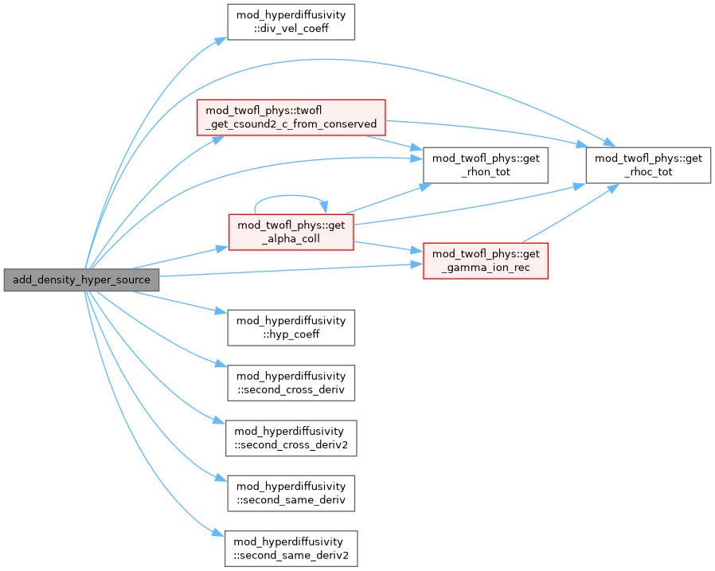
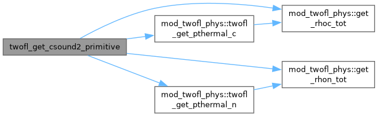
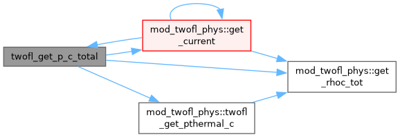

mod_twofl_phys.t File Reference
Go to the source code of this file.
Modules | |
| module | mod_twofl_phys |
| Magneto-hydrodynamics module. | |
Functions/Subroutines | |
| subroutine, public | mod_twofl_phys::twofl_phys_init () |
| subroutine, public | mod_twofl_phys::twofl_to_conserved (ixil, ixol, w, x) |
| Transform primitive variables into conservative ones. | |
| subroutine, public | mod_twofl_phys::twofl_to_primitive (ixil, ixol, w, x) |
| Transform conservative variables into primitive ones. | |
| subroutine | twofl_get_csound2_primitive (w, x, ixil, ixol, csound2) |
| subroutine, public | mod_twofl_phys::twofl_get_csound2_c_from_conserved (w, x, ixil, ixol, csound2) |
| subroutine, public | mod_twofl_phys::get_rhon_tot (w, x, ixil, ixol, rhon) |
| subroutine, public | mod_twofl_phys::twofl_get_pthermal_n (w, x, ixil, ixol, pth) |
| subroutine, public | mod_twofl_phys::twofl_get_v_n_idim (w, x, ixil, ixol, idim, v) |
| Calculate v component. | |
| subroutine, public | mod_twofl_phys::get_rhoc_tot (w, x, ixil, ixol, rhoc) |
| subroutine, public | mod_twofl_phys::twofl_get_pthermal_c (w, x, ixil, ixol, pth) |
| subroutine, public | mod_twofl_phys::twofl_get_v_c_idim (w, x, ixil, ixol, idim, v) |
| Calculate v_c component. | |
| subroutine, public | mod_twofl_phys::get_normalized_divb (w, ixil, ixol, divb) |
| get dimensionless div B = |divB| * volume / area / |B| | |
| subroutine, public | mod_twofl_phys::get_current (w, ixil, ixol, idirmin, current) |
| Calculate idirmin and the idirmin:3 components of the common current array make sure that dxlevel(^D) is set correctly. | |
| subroutine | twofl_get_p_c_total (w, x, ixil, ixol, p) |
| subroutine, public | mod_twofl_phys::twofl_clean_divb_multigrid (qdt, qt, active) |
| subroutine, public | mod_twofl_phys::twofl_face_to_center (ixol, s) |
| calculate cell-center values from face-center values | |
| subroutine, public | mod_twofl_phys::b_from_vector_potential (ixisl, ixil, ixol, ws, x) |
| calculate magnetic field from vector potential | |
| subroutine | add_density_hyper_source (index_rho) |
| subroutine, public | mod_twofl_phys::get_gamma_ion_rec (ixil, ixol, w, x, gamma_rec, gamma_ion) |
| subroutine, public | mod_twofl_phys::get_alpha_coll (ixil, ixol, w, x, alpha) |
Variables | |
| integer, parameter, public | mod_twofl_phys::eq_energy_tot =2 |
| integer, parameter, public | mod_twofl_phys::eq_energy_int =1 |
| integer, parameter, public | mod_twofl_phys::eq_energy_none =0 |
| integer, parameter, public | mod_twofl_phys::eq_energy_ki =3 |
| integer, public, protected | mod_twofl_phys::twofl_eq_energy = EQ_ENERGY_TOT |
| logical, public, protected | mod_twofl_phys::twofl_hyperdiffusivity = .false. |
| Whether hyperdiffusivity is used. | |
| logical, public, protected | mod_twofl_phys::twofl_dump_hyperdiffusivity_coef = .false. |
| double precision, dimension(:), allocatable, public, protected | mod_twofl_phys::c_shk |
| double precision, dimension(:), allocatable, public, protected | mod_twofl_phys::c_hyp |
| logical, public, protected | mod_twofl_phys::twofl_thermal_conduction_c = .false. |
| Whether thermal conduction is used. | |
| logical, public, protected | mod_twofl_phys::twofl_radiative_cooling_c = .false. |
| Whether radiative cooling is added. | |
| type(rc_fluid), allocatable, public | mod_twofl_phys::rc_fl_c |
| logical, public, protected | mod_twofl_phys::twofl_viscosity = .false. |
| Whether viscosity is added. | |
| logical, public, protected | mod_twofl_phys::twofl_gravity = .false. |
| Whether gravity is added: common flag for charges and neutrals. | |
| logical, public, protected | mod_twofl_phys::twofl_dump_full_vars = .false. |
| whether dump full variables (when splitting is used) in a separate dat file | |
| logical, public, protected | mod_twofl_phys::twofl_hall = .false. |
| Whether Hall-MHD is used. | |
| type(tc_fluid), allocatable, public | mod_twofl_phys::tc_fl_c |
| type(te_fluid), allocatable, public | mod_twofl_phys::te_fl_c |
| logical, public, protected | mod_twofl_phys::twofl_thermal_conduction_n = .false. |
| logical, public, protected | mod_twofl_phys::twofl_radiative_cooling_n = .false. |
| logical, public, protected | mod_twofl_phys::twofl_trac = .false. |
| Whether TRAC method is used. | |
| logical, public, protected | mod_twofl_phys::twofl_glm = .false. |
| Whether GLM-MHD is used. | |
| integer, public, protected | mod_twofl_phys::twofl_trac_type =1 |
| Which TRAC method is used. | |
| double precision, public, protected | mod_twofl_phys::twofl_trac_mask = 0.d0 |
| Height of the mask used in the TRAC method. | |
| logical, public, protected | mod_twofl_phys::source_split_divb = .false. |
| Whether divB cleaning sources are added splitting from fluid solver. | |
| double precision, public | mod_twofl_phys::twofl_glm_alpha = 0.5d0 |
| GLM-MHD parameter: ratio of the diffusive and advective time scales for div b taking values within [0, 1]. | |
| integer, public | mod_twofl_phys::rho_c_ |
| Index of the density (in the w array). | |
| integer, dimension(:), allocatable, public | mod_twofl_phys::mom_c |
| Indices of the momentum density. | |
| integer, public, protected | mod_twofl_phys::c |
| Indices of the momentum density for the form of better vectorization. | |
| integer, public, protected | mod_twofl_phys::m |
| integer, public, protected | mod_twofl_phys::c_ |
| integer, public | mod_twofl_phys::e_c_ =-1 |
| Index of the energy density (-1 if not present). | |
| integer, public, protected | mod_twofl_phys::b |
| integer, public | mod_twofl_phys::tcoff_c_ |
| Index of the cutoff temperature for the TRAC method. | |
| integer, public | mod_twofl_phys::tweight_c_ |
| integer, public, protected | mod_twofl_phys::psi_ |
| Indices of the GLM psi. | |
| logical, public | mod_twofl_phys::has_equi_rho_c0 = .false. |
| equi vars flags | |
| logical, public | mod_twofl_phys::has_equi_pe_c0 = .false. |
| integer, public | mod_twofl_phys::equi_rho_c0_ = -1 |
| equi vars indices in the stateequi_vars array | |
| integer, public | mod_twofl_phys::equi_pe_c0_ = -1 |
| logical, public | mod_twofl_phys::twofl_equi_thermal_c = .false. |
| logical, public | mod_twofl_phys::twofl_equi_thermal = .false. |
| integer, public | mod_twofl_phys::rho_n_ |
| integer, dimension(:), allocatable, public | mod_twofl_phys::mom_n |
| integer, public | mod_twofl_phys::e_n_ |
| integer, public | mod_twofl_phys::tcoff_n_ |
| integer, public | mod_twofl_phys::tweight_n_ |
| logical, public | mod_twofl_phys::has_equi_rho_n0 = .false. |
| logical, public | mod_twofl_phys::has_equi_pe_n0 = .false. |
| integer, public | mod_twofl_phys::equi_rho_n0_ = -1 |
| integer, public | mod_twofl_phys::equi_pe_n0_ = -1 |
| double precision, public | mod_twofl_phys::twofl_alpha_coll = 0d0 |
| collisional alpha | |
| logical, public | mod_twofl_phys::twofl_alpha_coll_constant = .true. |
| logical, public | mod_twofl_phys::twofl_coll_inc_te = .true. |
| whether include thermal exchange collisional terms | |
| logical, public | mod_twofl_phys::twofl_coll_inc_ionrec = .false. |
| whether include ionization/recombination inelastic collisional terms | |
| logical, public | mod_twofl_phys::twofl_equi_thermal_n = .false. |
| double precision, public | mod_twofl_phys::dtcollpar = -1d0 |
| logical, public, protected | mod_twofl_phys::twofl_dump_coll_terms = .false. |
| whether dump collisional terms in a separte dat file | |
| double precision, public, protected | mod_twofl_phys::he_abundance = 0d0 |
| double precision, public, protected | mod_twofl_phys::rc = 2d0 |
| double precision, public, protected | mod_twofl_phys::rn = 1d0 |
| double precision, public | mod_twofl_phys::twofl_gamma = 5.d0/3.0d0 |
| The adiabatic index. | |
| double precision, public | mod_twofl_phys::twofl_adiab = 1.0d0 |
| The adiabatic constant. | |
| double precision, public | mod_twofl_phys::twofl_eta = 0.0d0 |
| The MHD resistivity. | |
| double precision, public | mod_twofl_phys::twofl_eta_hyper = 0.0d0 |
| The MHD hyper-resistivity. | |
| double precision, public | mod_twofl_phys::twofl_etah = 0.0d0 |
| The MHD Hall coefficient. | |
| character(len=std_len), public, protected | mod_twofl_phys::typedivbfix = 'linde' |
| Method type to clean divergence of B. | |
| character(len=std_len), public, protected | mod_twofl_phys::type_ct = 'uct_contact' |
| Method type of constrained transport. | |
| integer, public, protected | mod_twofl_phys::twofl_divb_nth = 1 |
| Whether divB is computed with a fourth order approximation. | |
| logical, public | mod_twofl_phys::clean_initial_divb = .false. |
| clean initial divB | |
| logical, public | mod_twofl_phys::divbwave = .true. |
| Add divB wave in Roe solver. | |
| logical, dimension(2 *^nd), public, protected | mod_twofl_phys::boundary_divbfix =.true. |
| To control divB=0 fix for boundary. | |
| integer, dimension(2 *^nd), public, protected | mod_twofl_phys::boundary_divbfix_skip =0 |
| To skip * layer of ghost cells during divB=0 fix for boundary. | |
| logical, public, protected | mod_twofl_phys::b0field_forcefree =.true. |
| B0 field is force-free. | |
| procedure(mask_subroutine), pointer, public | mod_twofl_phys::usr_mask_alpha => null() |
| procedure(mask_subroutine2), pointer, public | mod_twofl_phys::usr_mask_gamma_ion_rec => null() |
Function/Subroutine Documentation
◆ add_density_hyper_source()
| subroutine add_source_hyperdiffusive::add_density_hyper_source | ( | integer, intent(in) | index_rho | ) |
Definition at line 6325 of file mod_twofl_phys.t.
Here is the call graph for this function:

◆ twofl_get_csound2_primitive()
| subroutine twofl_get_csound_prim::twofl_get_csound2_primitive | ( | double precision, dimension(ixi^s,nw), intent(in) | w, |
| double precision, dimension(ixi^s,1:ndim), intent(in) | x, | ||
| integer, intent(in) | ixi, | ||
| integer, intent(in) | l, | ||
| integer, intent(in) | ixo, | ||
| l, | |||
| double precision, dimension(ixi^s), intent(out) | csound2 ) |
Definition at line 2682 of file mod_twofl_phys.t.
Here is the call graph for this function:

◆ twofl_get_p_c_total()
| subroutine twofl_add_source_geom::twofl_get_p_c_total | ( | double precision, dimension(ixi^s,nw), intent(in) | w, |
| double precision, dimension(ixi^s,1:ndim), intent(in) | x, | ||
| integer, intent(in) | ixi, | ||
| integer, intent(in) | l, | ||
| integer, intent(in) | ixo, | ||
| l, | |||
| double precision, dimension(ixi^s), intent(out) | p ) |
Definition at line 4779 of file mod_twofl_phys.t.
Here is the call graph for this function:

Generated by